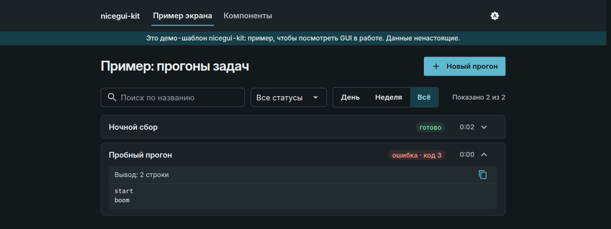

nicegui-kit
Theme and toolkit for NiceGUI apps that run jobs: WCAG AA light/dark theme, layout helpers, subprocess pool with a live log.
Theme and toolkit for NiceGUI apps that run jobs: WCAG AA light/dark theme, layout helpers, subprocess pool with a live log.
